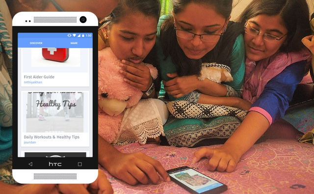
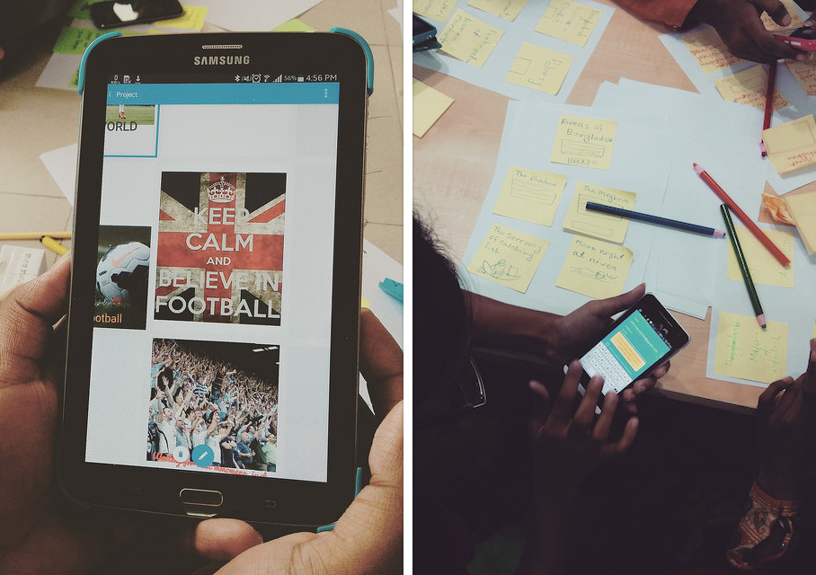
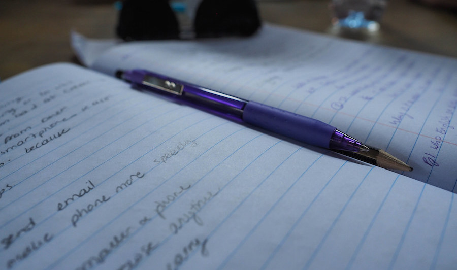
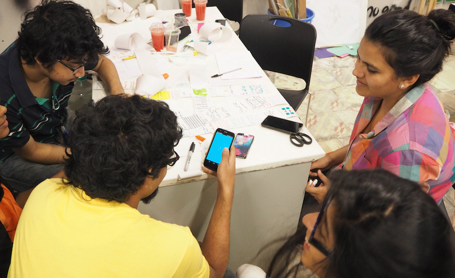

Membaca, Menulis, dan Berpartisipasi dengan Webmaker
Buat sebuah Proyek Webmaker
Dibuat olehLaura diolah-ulang untuk Maker Party oleh Bobby.
Dengan membuat proyek melalui Webmaker, kamu akan membuat konten web orisinal.
2-3 jam
-
Persiapan
- Lakukan aktivitas oleh diri masing-masing agar lebih mengenal.
- Pasang Webmaker pada ponsel Android 4.0.4 (atau selanjutnya).
Jika Anda tertarik untuk berkontribusi ke produk Webmaker dan upaya penelitian...
- Lengkapi kuisioner ump[an balik Webmaker untuk dirimu sendiri dan sebarkan kepada lainnya jika mereka telah menyelesaikan aktivitasnya.
Ingat selalu...
Selagi Webmaker ada di Google Play, maka ia akan selalu dikembangkan dan kamu akan menerima pembaruan secara rutin. Jika kamu atau pesertamu menemukan bug atau memiliki umpan balik tentang desain atau pengalaman keseluruhan, tolong beritahu kami. Kami akan mencoba mengatasinya secepat mungkin, jadi tolong lakukan yang terbaik sebagai fasilitator untuk membatasi rasa frustasi melalui kerja sama dengan para peserta dan menjadikan mereka bagian dari proses dokumentasi kutu/umpan balik.
-
15
menitPerkenalan
Dalam sebuah lingkaran, perkenalkan diri masing-masing.
Supaya setiap peserta memiliki kerangka berpikir yang sama, tanyakan setiap peserta sebuah pertanyaan tentang dirinya sendiri atau pengalaman pribadinya. Referensikan kembali tanggapan tersebut untuk membantunya berpikir tentang perancangan dan pembuatan di aktifitas selanjutnya.
- "Hal terakhir yang saya buat adalah _________."
- "Internet tidak sama dengan web karena ___________."
- "Cara yang saya sukai untuk membuat dan berbagi di web adalah ____________."
-
10
menitJelajahi Webmaker
Perkenalkan Webmaker ke peserta dengan menunjukan aplikasinya
 Laura de Reynal- Diskusikan tentang tujuan Webmaker: menemukan, membuat, dan berbagi.
- Jelajahi galeri Discover(lihat gambar di sebelah kanan) bersama-sama untuk melihat apa yang orang lain telah buat.
-
10
menitRencanakan proyekmu
Catatan: Sesi ini dan sesi Sketsa gagasan kamu dapat digantikan dengan pelatihan pengonsepan gagasan yang lebih mendalam. Lihat sesi aktivitas Merancang sebuah Cerita untuk Web lebih lanjut.
Ciptakan beberapa gagasan mengenai proyek yang akan dibuat peserta. Ajak mereka berdiskusi tentang minat mereka dan bagaimana minat tersebut diekspresikan dengan Webmaker.
- Webmaker adalah platform yang baik untuk bercerita.
- Halaman dapat disusun dalam bentuk non-linear untuk membangun proyek dengan tata letak yang menarik atau bermakna.
- Bayangkan seperti membangun situs web lainnya — mungkin milik Anda — tanpa kode sedikitpun.
- Lihat laman Gagasan Proyek untuk inspirasi.
- Cari 3 contoh dari galeri Discover yang menarik dan mungkin berharga untuk diutakatik ulang.
Ikut sertakan pengguna dalam memikirkan tentang apa yang ingin mereka buat dan mendorongnya dengan gagasan untuk mereka yang mengalami kesulitan.
- Bayangkan seperti membangun situs web lainnya — mungkin milik Anda — tanpa kode sedikitpun.
- Lihat laman Gagasan Proyek untuk inspirasi.
- Cari 3 contoh dari galeri Discover yang menarik dan mungkin berharga untuk diutakatik ulang.
 Laura de Reynal
Laura de Reynal
-
20
menitSketsa gagasan kamu
Catatan: Sesi ini dan sesi Sketsa gagasan kamu dapat digantikan dengan pelatihan pengonsepan gagasan yang lebih mendalam. Lihat sesi aktivitas Merancang sebuah Cerita untuk Web lebih lanjut.
Sebelum membuat proyek dengan Webmaker di ponsel, gunakan waktumu untuk mensketsa gagasan di atas kertas.
Gunakan kertas (A4 lebih baik) untuk menggambarkan halaman di Webmaker, dan catatan post-it untuk menggambarkan elemen-elemen dari halaman-halaman tersebut. Dalam setiap post-it, gambarkan secara sketsa gagasan sketsa untuk elemen dan tempelkan di halaman-halaman tersebut.
- Ingat, elemen yang dapat kamu gunakan untuk membuat proyek Webmaker adalah Teks, Gambar, and Tautan — blok-blok dasar dalam pembangunan Web
- Letakkan catatan post-it bagaimana yang Anda inginkan — pikirkan posisi, rotasi dan skala — seperti kamu lakukan dengan elemen dalam halaman di dalam aplikasi.
 Laura de Reynal
Laura de Reynal
-
30
menitMembuat proyek Anda di Webmaker
Menggunakan sketsa dari langkah sebelumnya sebagai panduan, buat peserta menciptakan proyek Webmaker.
Selama fase ini, coba untuk memantau perkembangan dan berbicara dengan peserta untuk memahami apa yang mereka bua, mengapa mereka membuatnya, dan kesulitan dan kemudahan yang mereka alami.
Untuk mendorong belajar dan mengajar bersama, coba adakan sesi "ceritakan pengalamanmu" di mana para peserta dapat menceritakan hal-hal yang mereka temukan dan proses kreatif mereka saat menggunakan Webmaker. Ini mungkin membutuhkan beberapa dorongan, seperti "Apa yang sedang kamu utak-atik saat ini?" atau, "Adakah di sini yang telah menemukan sesuatu yang menarik?"
- "Oh, saya baru saja melihat tombol ubah. Sepertinya saya dapt mengubah gambar saya dengan itu."
- "Bagaimana saya menyalin & menempelkan?"
- "Apa logo petir ini? Oh, saya bisa memilih warna saya sendiri sekarang!"
Peluang Kontribusi Riset
Ajak peserta untuk mengumpulkan umpan balik tentang pengalaman menggunakan aplikasi. Kutu dan umpan balik umum selalu terbuka untuk diterima. Cukup membuat sebuah isu di github, di mana Webmaker dikembangkan, atau cukup kirim surel ke help@webmaker.org.
 Laura de Reynal -
10
minPeriksa dan Refleksikan
Hentikan workshop sementara dan tanyakan beberapa pertanyaan. Peserta dapat membagikan perkembangan mereka dan kumpulkan masukkan dari masing-masing mereka. Dorong mereka untuk keluar, bawa kreasi mereka ke tingkat selanjutnya.
Pertanyaan:
- Apa yang kamu buat?
- Bagaimana perasaanmu?
- Apakah kamu membutuhkan bantuan?
- Apakah kamu ingin melanjutkan?
- Apa saja yang kamu butuhkan untuk membuat proyekmu?
- Bagaimana kamu dapat menghubungkan proyekmu dengan berbagai hal yang sedang kamu kerjakan?
- Apa pendapatanmu mengenai aplikasi tersebut?
 Laura de Reynal
Laura de Reynal
-
40
menitLanjutkan Membuat
Persilakan peserta untuk menyelesaikan proyek mereka. Ketika ini terjadi, terus pantau perkembangan dan berbicara dengan mereka tentang apa yang mereka sedang lakukan.
Ketika peserta menyelesaikan proyeknya, tanya mereka untuk berpikir kepada siapakah mereka akan berbagi proyeknya.
Ketika mereka siap, buat masing-masing peserta memakai fitur Bagikan untuk mengirimkan proyek mereka kepada seseorang mereka kenal, atau tuliskan di media sosial favorit mereka.
-
40
menitBagi dan Diskusikan
Beri masing-masing peserta waktu untuk membagikan proyek mereka kepada grup. Bicarakan tentang apakah semua berjalan lancar, apa saja pemasalahannya, dan apa saja yang dipelajari oleh peserta.
Jika peserta belum menyelesaikan proyeknya, diskusi apa yang bisa mereka lakukan untuk menyelesaikannya kemudian.
Untuk peserta yang telah selesai, diskusikan apa yang bisa mereka lakukan selanjutnya:
- Buat proyek lainnya yang lebih ambisius, membangun pengalaman mereka.
- Adakan workshop mereka sendiri menggunakan aktivitas ini.
- Berkontribusi kepada Webmaker melalui kode, desain, riset, pengembangan produk, dan masih banyak lagi.
Pastikan untuk membagikan beberapa proyek kreatif atau yang menginspirasi kepada @webmaker atau help@webmaker.org.
-
20
menitMemberikan Umpan Balik
Tambahan: Peluang Kontribusi Riset
Ajak masing-masing peserta untuk melengkapi kuesioner umpan balik Webmaker.
Jika ada yang memiliki umpan balik langsung ditujukan bagi tim Webmaker, silakan untuk menghubung kami:
 Laura de Reynal- Surel: help@webmaker.org
- Twitter: @webmaker
- Facebook: facebook.com/mozillawebmaker
- GitHub: github.com/mozilla/webmaker-androidr
- IRC: irc.mozilla.org, #webmaker
-
10
menitMendorong Partisipasi
Akhirnya, kemampuan membimbing dan kepemimpinan adalah ajaran penting Literasi Web dan Mozilla. Dorong peserta untuk memperdalam keikutsertaan mereka dengan menjalankan pelatihan versi mereka sendiri.
Tawarkan perspektif Anda sebagai pemimpin pelatihan dan berikan peserta kesempatan untuk bertanya tentang pengalaman dan keterlibatan Anda dengan Literasi Web, Webmaker, Mozilla, dll.
 Laura de Reynal